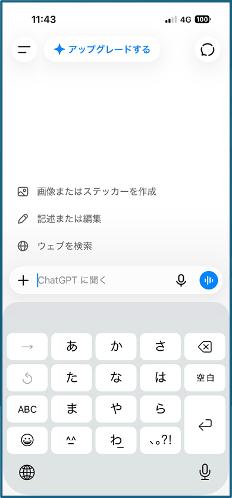

まるで、人と話しているようなAI
最近のChatGPTの音声会話は、とても自然です。 文字で質問するだけでなく、スマホに向かって話しかけると、 ChatGPTが声で返してくれます。
イメージとしては、昔のドラマや映画に出てきた 「人と自然に会話するAIアシスタント」が、 いよいよ身近なスマホの中に入ってきた感覚です。
日本語を学んでいる学生にとっては、 「間違えても恥ずかしくない」「何度でも練習できる」「いつでも相手がいる」 という大きなメリットがあります。
なぜ日本語練習に向いているのか
会話量を増やせる
授業だけでは足りない「話す時間」を、AIとの会話で増やせます。 家でも、通学中でも、短時間で練習できます。
失敗しても安心
人前で間違えるのが怖い学生でも、AI相手なら気軽に話せます。 何度も言い直し、やり直しができます。
場面練習ができる
コンビニ、病院、アルバイト面接、役所、学校生活など、 実際に必要な場面をロールプレイできます。
おすすめの声：Cove
個人的なおすすめは Cove です。 落ち着いた雰囲気で聞き取りやすく、会話相手として自然に感じやすい声です。
もちろん、声の好みは人によって違います。 学生にはいくつか試してもらい、 「この声なら練習したい」と思えるものを選んでもらうのがよいでしょう。
車やスマホと自然に会話する時代は、もうすぐそこまで来ています。
かつてはSFの中の世界だった「機械と自然に話す」体験が、 今はスマホアプリで誰でも試せるようになっています。 これは単なる便利ツールではなく、語学学習の環境を大きく変える可能性があります。
会話ボタンを押すだけ
ChatGPTアプリを開いたら、入力欄の右側にある 青い音声ボタンを押します。 すると、文字入力ではなく、声でChatGPTと会話できます。
学生には難しい設定を説明するよりも、 まずは「このボタンを押して話してみよう」と見せるのが一番早いです。
※ 画面デザインやボタンの位置は、アプリのバージョンによって変わる場合があります。

そのまま使える練習プロンプト
ChatGPTの音声会話を始めたら、次のように話しかけてみてください。
あなたは日本語の先生です。
私は日本語を勉強している学生です。
これから日本語で会話練習をしたいです。
テーマは「コンビニで買い物」です。
お願い：
・やさしい日本語で話してください
・私が間違えたら、自然な日本語に直してください
・会話のあとで、よかったところと直すところを教えてください
・会話は短い文で進めてください
では、あなたがコンビニの店員さんになってください。
AIは、先生の代わりではなく、練習量を増やす相棒。
先生が教え、学生がAIでたくさん練習し、また授業で確認する。 そのサイクルを作ることで、日本語学習はもっと実践的になります。